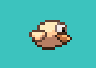

Utilizatorul joacă drept pasărea din centrul ecranului și poate sări folosind click stânga
sau tasta space.

Acesta trebuie să evite pipe-urile pentru a câștiga puncte, iar fiecare pipe depășit
reprezintă un punct. Solul reprezintă de asemenea un obstacol în calea jucătorului.

Scopul jocului nu este bine definit. Acesta continuă la infinit, însă întrecerea între
prieteni pe baza scorului constituie competitivatea sa.